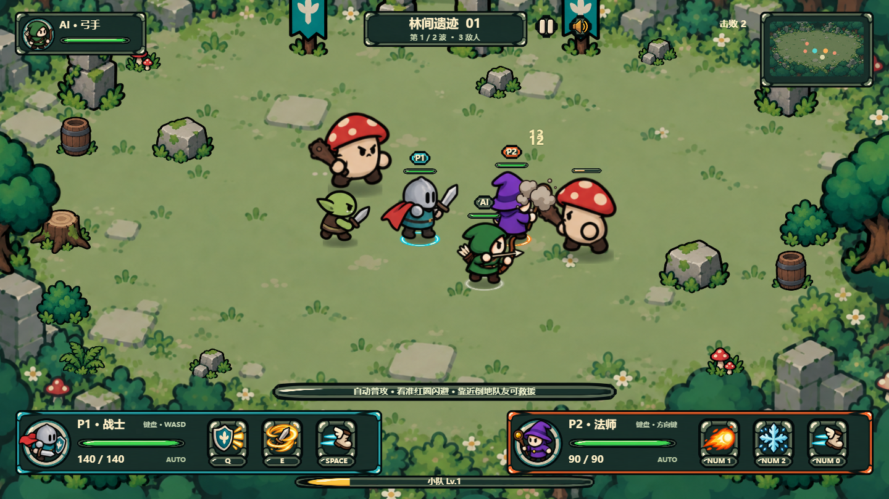
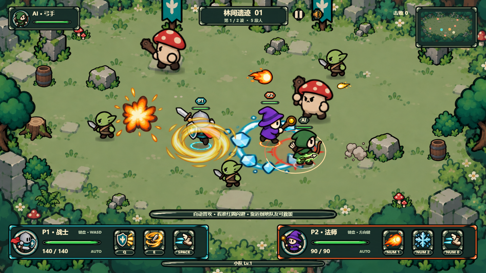
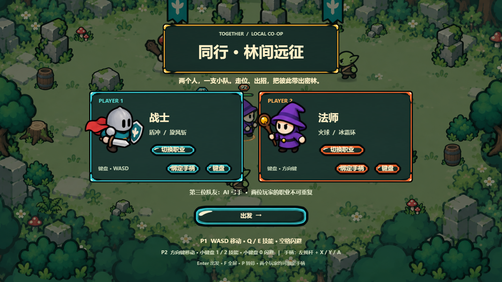
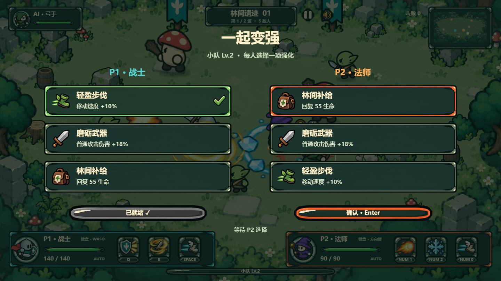
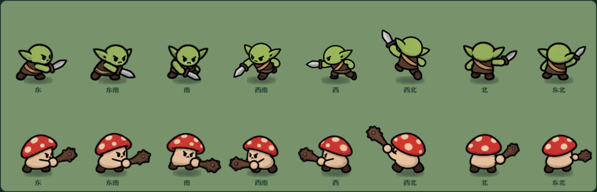
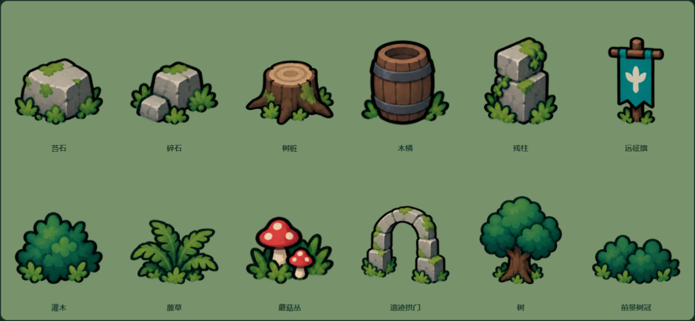
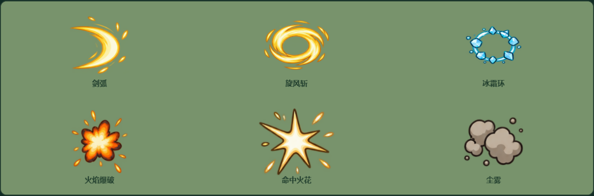
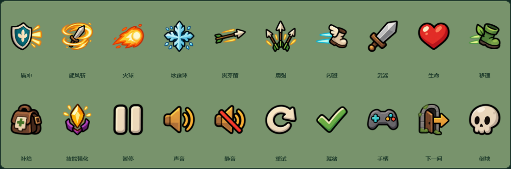

同行 · 全资源美术重做
延续已确认的 D 画风，怪物、森林遗迹、场景物件、技能与特效、弹道和游戏 UI 已接入插画 PNG。新增 152 个透明图集单元与 1 张背景，继续使用三职业原有 192 个角色单元。
实际游戏运行

标准操作脚本进入战斗后的画面：P1 战士、P2 法师、AI 弓手。玩家、怪物、道具、场景、技能槽和头像均来自 PNG 资源。
技能与预警同屏

为检查遮挡而布置的特效审查场景。旋风贴地旋转，敌人红圈覆盖地面法术；实际伤害范围与冷却独立计算。
职业选择

独立升级与就绪

两类怪物 · 八方向出手

每类 8 方向 × 两张步态、蓄力、出手。左向出手已补画；当前为关键姿态版，更细的中间帧尚未制作。
场景物件

战斗特效

技能与系统图标
